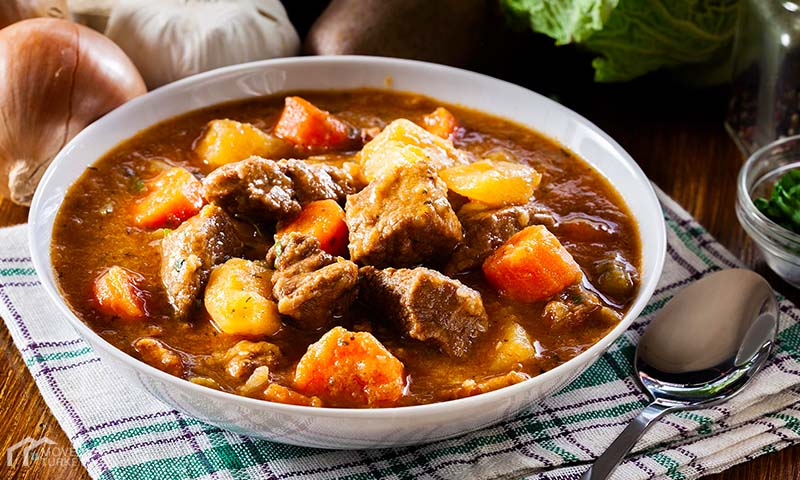

Turkish Stew
Ingredients
- 3 cups water
- 1 ½ cups dry couscous
- 2 tablespoons olive oil
- 1 pound tilapia fillets, cut into chunks
- ground black pepper to taste
Prep Time:
15 minutes
Instructions:
-
In a medium saucepan, bring 3 cups water to a boil, and stir in the
couscous. Remove from heat, cover, and let sit 5 minutes.
-
Bring the mixture to a boil, and mix in the fish chunks. Reduce heat,
and simmer 10 minutes, or until the fish is easily flaked with a fork.
Serve over couscous.
Back to Category Page